Architecture direction
Company-wide vision, technology strategy, guardrails, and the decisions that keep delivery moving in the same direction.
Independent IT Software Architect Consultant
I help technology leaders shape durable architecture, align teams around the real domain, and move legacy systems toward a clearer future.

17+ years in architecture
✳Security-aware by default
✳Domain-driven thinking
✳Hands-on when it matters
Company-wide vision, technology strategy, guardrails, and the decisions that keep delivery moving in the same direction.
Pragmatic paths from monoliths to microservices, moduliths, cloud-native, and hybrid-cloud systems.
LLM, Spec-driven-development, DDD, UML, ArchiMate, Architecture-as-Code, and API-first practices translated into useful working tools.
ESET
Defining architecture vision and strategic technology direction across a global security product company.
Nokia Siemens Networks
Built embedded LTE protocol-stack components and testing environments for telecommunications systems.
bitmedia · Siemens AG Austria
Developed enterprise e-learning applications and tooling across web, backend, and Unix environments.
Education
Slovak University of Technology in Bratislava · 2002 — 2008
Software development, digital communications, signal processing, wireless technologies, system integration, and ICT security.
Languages
Based in Luxembourg · working across Europe
A broad technical range, held together by systems thinking.
DDD · Agile / SAFe · TOGAF
ArchiMate · UML · API-first
Architecture-as-Code
C++ · Go · C# · JavaScript
Python · PowerShell · Protobuf
OpenAPI · JSON
Microsoft Azure · AWS
Google Cloud Platform
Linux / Unix
Have a difficult system?
Based in Luxembourg · available for remote and European engagements